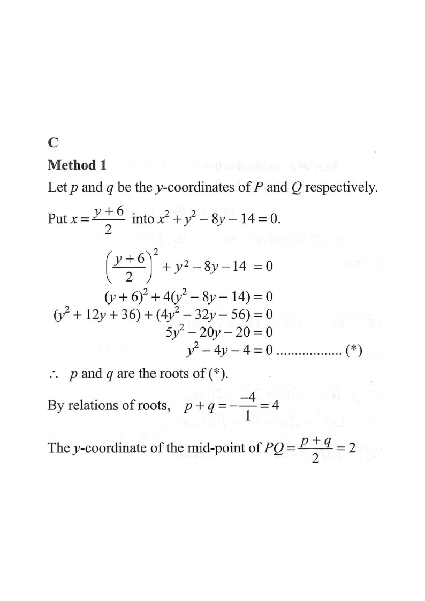

解析幾何 · 直線與圓的交點

$$y=2x-6$$
$$x^{2}+(2x-6)^{2}-8(2x-6)-14=0$$
$$x^{2}+4x^{2}-24x+36-16x+48-14=0$$
$$5x^{2}-40x+70=0\ \Rightarrow\ x^{2}-8x+14=0$$
$$x_{1}+x_{2}=8\ \Rightarrow\ x_{\text{中點}}=4$$
$$y=2(4)-6=2$$
故中點的 $y$ 坐標為 $2$，答案為 C。
（另一個做法：圓心 $(0,4)$ 到直線的垂線必平分 $PQ$，先求垂足再核對。）